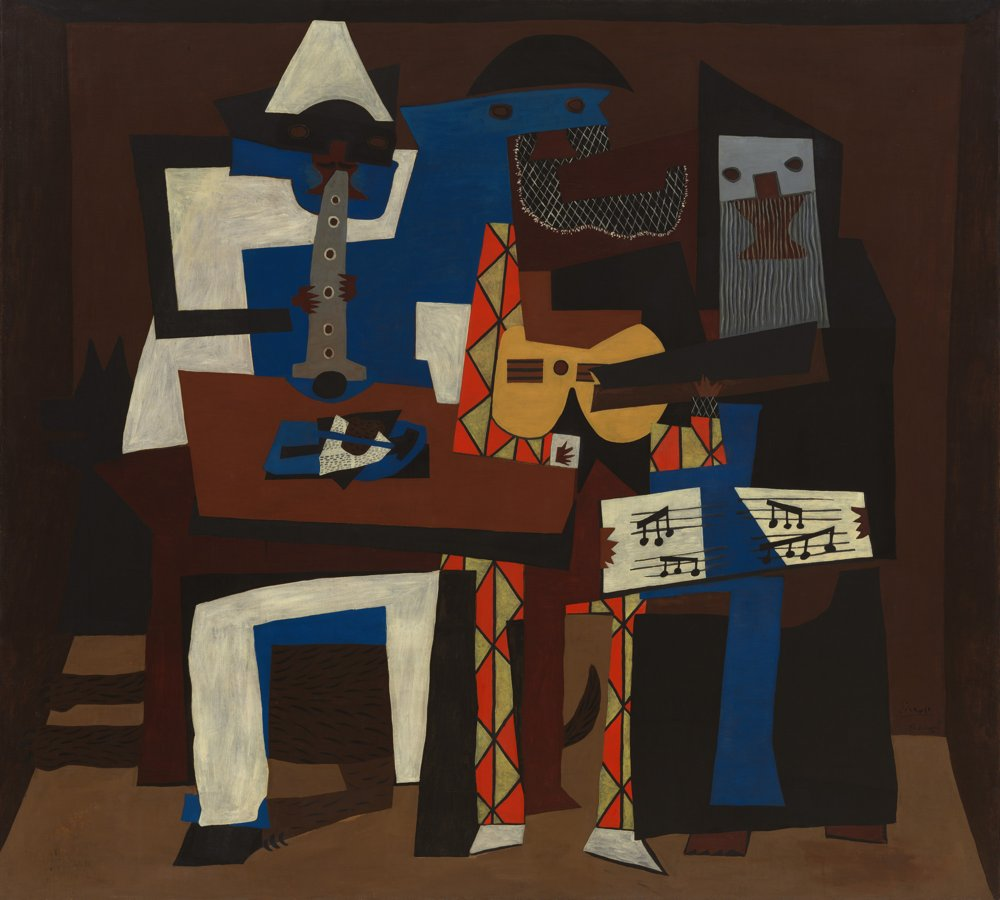

Three Musicians
Pablo Picasso · Fontainebleau, summer 1921 · Oil on canvas · 200.7 × 222.9 cm · Museum of Modern Art, New York
In copyright. Look and learn: shown for study, not for download.
Picasso painted two versions of this picture side by side in the summer of 1921, in the garage of a villa at Fontainebleau that he was using as a studio. At the end of the summer the canvases were untacked from the garage walls and rolled up. The Pierrot is believed to stand for the poet Guillaume Apollinaire, who had died in 1918, the Harlequin for Picasso, and the monk for Max Jacob, who entered a Benedictine monastery that June. A dog lies under the table, mostly hidden.